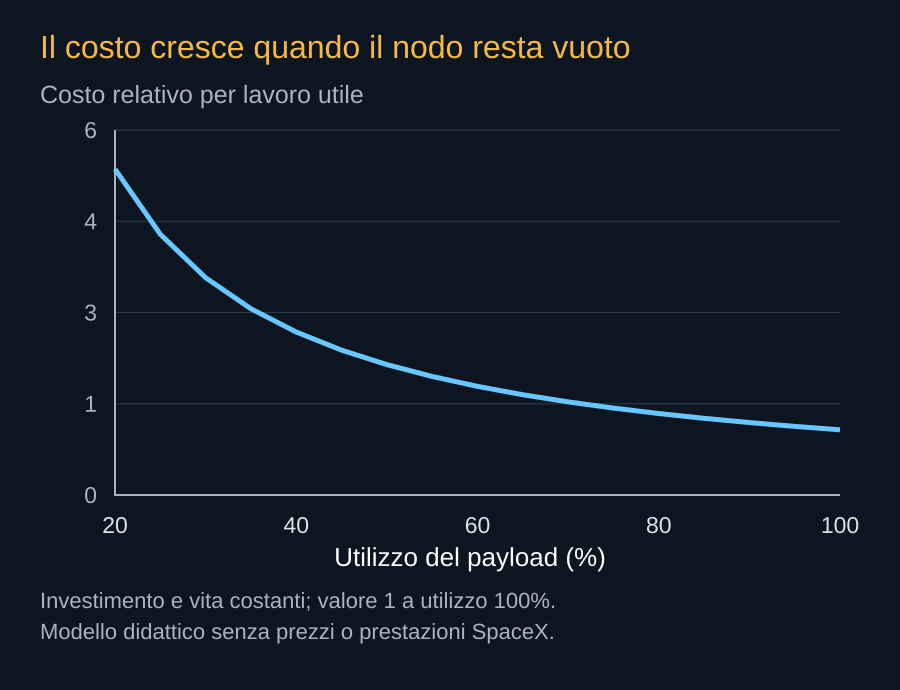

Il Sole non invia una fattura al satellite. La fabbrica, il lanciatore, i processori e la rete hanno invece un costo. La convenienza del calcolo orbitale si trova nel rapporto fra questo investimento e il lavoro utile che il sistema riesce a consegnare durante la propria vita. La sola assenza di un acquisto quotidiano di elettricità non determina il prezzo del servizio.
Il costo che parte prima del primo cliente
Prima di generare ricavi, un nodo richiede sviluppo, componenti, assemblaggio, prove, lancio e entrata in servizio. Occorre sostenere anche software e infrastrutture condivise. Parte di questi costi può diminuire con la serie; parte rimane legata a ogni veicolo. Le economie di scala devono essere osservate nei processi e nei contratti, non dedotte automaticamente dal numero desiderato di satelliti.
Il lancio conta, ma non è l’unica variabile. Se diventasse molto economico mentre hardware e collaudi rimanessero costosi, il servizio potrebbe non raggiungere il vantaggio previsto. Se invece la fabbrica riducesse massa e prezzo mantenendo durata e prestazioni, potrebbe cambiare la convenienza anche senza il più favorevole costo di trasporto immaginabile.

Una formula per fare domande
In un modello semplificato, il costo del capitale per unità di lavoro dipende da investimento diviso per vita, disponibilità, utilizzo e velocità utile. Se un nodo costa C e dura L anni, il suo costo annualizzato elementare è C/L, senza interessi o valore residuo. La capacità sulla quale distribuirlo deve sottrarre guasti, tempi di controllo e periodi senza clienti.
Prendiamo un investimento interamente ipotetico di 10 milioni di euro, vita di cinque anni, disponibilità del 90% e utilizzo del 70%. Il capitale annualizzato sarebbe 2 milioni. Distribuito sulle circa 5.519 ore annue di uso effettivo, peserebbe circa 362 euro per ora di nodo. Sono numeri scelti per mostrare il metodo, non una stima del costo AI1 o del suo prezzo commerciale. Per confrontarli con una GPU-ora servirebbe conoscere quante unità effettivamente utili offrisse quel nodo.


Obsolescenza e durata fisica
Un satellite può funzionare più a lungo di quanto il proprio computer resti competitivo per alcuni clienti. La vita fisica e la vita economica non coincidono. Un nodo più vecchio potrebbe servire carichi meno esigenti; potrebbe anche consumare troppe risorse rispetto a una generazione nuova. Il ricambio può diventare necessario prima del guasto.
Sul terreno i componenti possono essere sostituiti conservando edificio e parte degli impianti. In orbita il ricambio del payload può richiedere sostituire un intero satellite, salvo una manutenzione specifica. La modularità in fabbrica riduce alcuni costi di progettazione, ma non offre da sola il vantaggio della sostituzione a mano.
Il confronto con un’alternativa reale
Il concorrente economico non è un edificio immobile e inefficiente scelto per rendere favorevole il grafico. È l’alternativa terrestre disponibile per lo stesso cliente, con lo stesso lavoro e condizioni comparabili. Efficienza dei chip, località, rete e raffreddamento continuano a migliorare anche sulla Terra. Il progetto orbitale deve correre insieme a questa evoluzione.
Può trovare valore in disponibilità energetica, accesso a dati spaziali o tempi di espansione. Potrebbe offrire servizi specifici prima di diventare competitivo per il cloud generale. Nell’edizione corrente mancano dati pubblici sufficienti per un prezzo verificato per risultato Starmind. Il bilancio economico resta un metodo di confronto e un elenco di misure da ottenere, non una promessa di ritorno finanziario.
Fonti pubbliche e tracce
- IEA, Energy and AI: domanda elettrica. Rapporto 2025: 415 TWh nel 2024 e scenario centrale di circa 945 TWh nel 2030 per tutti i data center. Stima e scenario, non misure della sola IA.
- SpaceX, Starmind e scheda AI1. Consultata il 10 ottobre 2026. Fonte aziendale per la scheda corrente e gli obiettivi Gigasat; non rapporto di prove in volo.
- NVIDIA, SpaceXAI e prima generazione Starmind. 24 agosto 2026. Conferma l’adattamento di Vera Rubin NVL72; non pubblica una distinta completa del satellite.
- Thales Alenia Space, risultati dello studio ASCEND. 27 giugno 2024: studio europeo di fattibilità e condizioni ambientali. Non una centrale di calcolo già operativa.